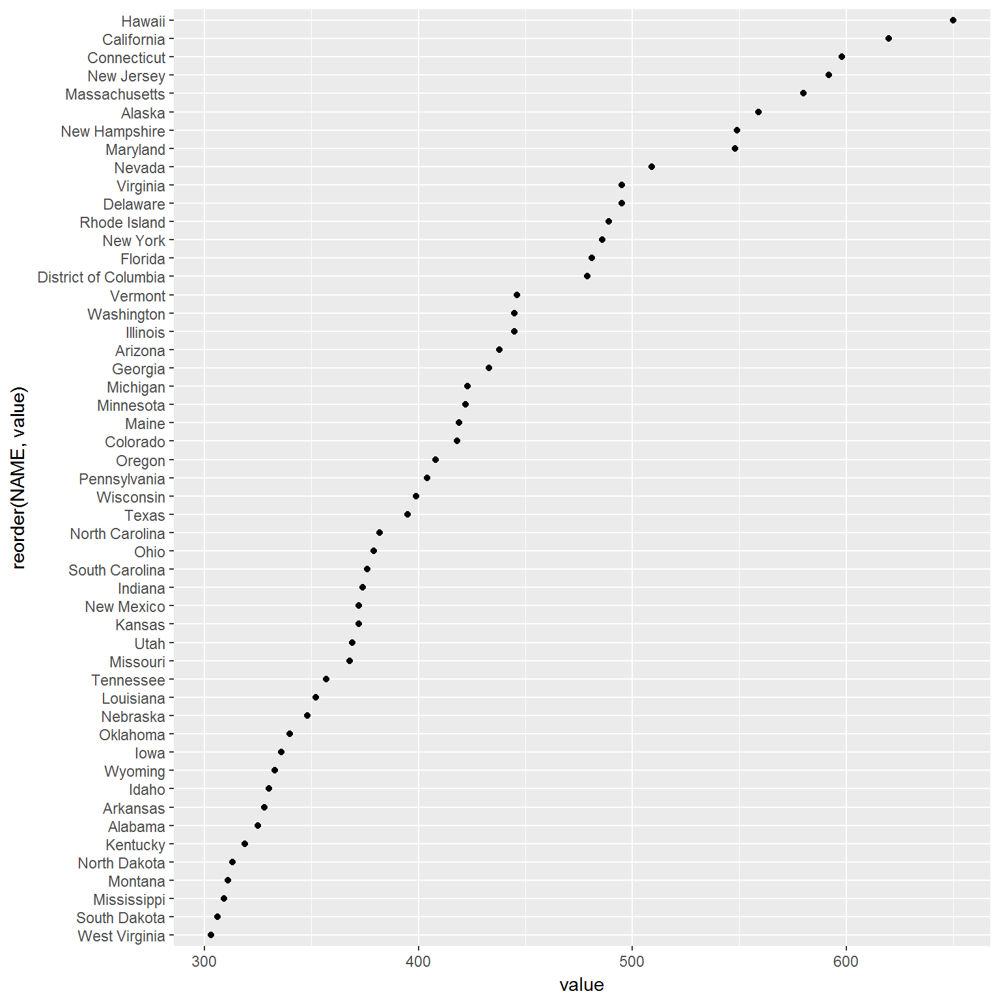
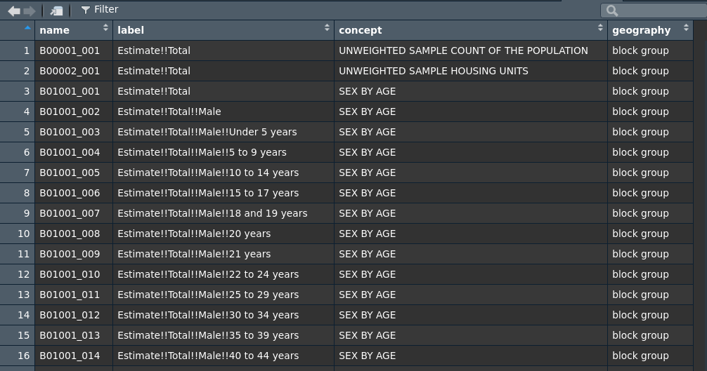
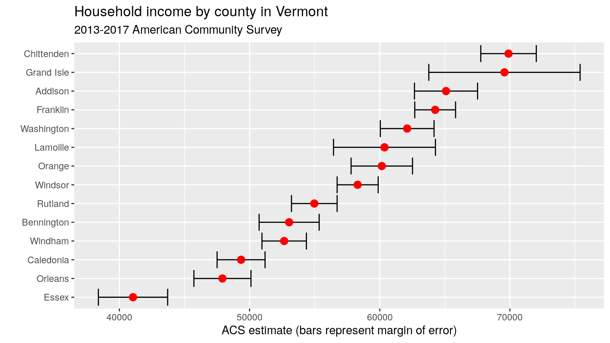

To get started working with tidycensus, users should load the package along with the tidyverse package, and set their Census API key. A key can be obtained from http://api.census.gov/data/key_signup.html.
library(tidycensus) library(tidyverse) census_api_key("YOUR API KEY GOES HERE")
There are two major functions implemented in tidycensus: get_decennial(), which grants access to the 2000 and 2010 decennial US Census APIs, and get_acs(), which grants access to the 1-year and 5-year American Community Survey APIs. Note: at the moment, access to the 1990 (SF1 and SF3) and 2000 (SF3) APIs has been suspended.
In this basic example, let’s look at median age by state in 2010:
age10 <- get_decennial(geography = "state", variables = "P013001", year = 2010) head(age10)
## # A tibble: 6 x 4
## GEOID NAME variable value
## <chr> <chr> <chr> <dbl>
## 1 01 Alabama P013001 37.9
## 2 02 Alaska P013001 33.8
## 3 04 Arizona P013001 35.9
## 4 05 Arkansas P013001 37.4
## 5 06 California P013001 35.2
## 6 22 Louisiana P013001 35.8The function returns a tibble with four columns by default: GEOID, which is an identifier for the geographical unit associated with the row; NAME, which is a descriptive name of the geographical unit; variable, which is the Census variable represented in the row; and value, which is the value of the variable for that unit. By default, tidycensus functions return tidy data frames in which rows represent unit-variable combinations; for a wide data frame with Census variable names in the columns, set output = "wide" in the function call.
As the function has returned a tidy object, we can visualize it quickly with ggplot2:
age10 %>% ggplot(aes(x = value, y = reorder(NAME, value))) + geom_point()

To get decennial Census data or American Community Survey data, tidycensus users supply an argument to the required geography parameter. Arguments are formatted as consumed by the Census API, and specified in the table below. Not all geographies are available for all surveys, all years, and all variables. Most Census geographies are supported in tidycensus at the moment; if you require a geography that is missing from the table below, please file an issue at https://github.com/walkerke/tidycensus/issues.
If state or county is in bold face in “Available by”, you are required to supply a state and/or county for the given geography.
| Geography | Definition | Available by | Available in |
|---|---|---|---|
"us" |
United States |
get_acs(), get_decennial()
|
|
"region" |
Census region |
get_acs(), get_decennial()
|
|
"division" |
Census division |
get_acs(), get_decennial()
|
|
"state" |
State or equivalent | state |
get_acs(), get_decennial()
|
"county" |
County or equivalent | state, county |
get_acs(), get_decennial()
|
"county subdivision" |
County subdivision | state, county |
get_acs(), get_decennial()
|
"tract" |
Census tract | state, county |
get_acs(), get_decennial()
|
"block group" |
Census block group | state, county |
get_acs(), get_decennial()
|
"block" |
Census block | state, county | get_decennial() |
"place" |
Census-designated place | state |
get_acs(), get_decennial()
|
"alaska native regional corporation" |
Alaska native regional corporation | state |
get_acs(), get_decennial()
|
"american indian area/alaska native area/hawaiian home land" |
Federal and state-recognized American Indian reservations and Hawaiian home lands | state |
get_acs(), get_decennial()
|
"american indian area/alaska native area (reservation or statistical entity only)" |
Only reservations and statistical entities | state |
get_acs(), get_decennial()
|
"american indian area (off-reservation trust land only)/hawaiian home land" |
Only off-reservation trust lands and Hawaiian home lands | state | get_acs() |
"metropolitan statistical area/micropolitan statistical area" |
Core-based statistical area | state |
get_acs(), get_decennial()
|
"combined statistical area" |
Combined statistical area | state |
get_acs(), get_decennial()
|
"new england city and town area" |
New England city/town area | state |
get_acs(), get_decennial()
|
"combined new england city and town area" |
Combined New England area | state |
get_acs(), get_decennial()
|
"urban area" |
Census-defined urbanized areas |
get_acs(), get_decennial()
|
|
"congressional district" |
Congressional district for the year-appropriate Congress | state |
get_acs(), get_decennial()
|
"school district (elementary)" |
Elementary school district | state |
get_acs(), get_decennial()
|
"school district (secondary)" |
Secondary school district | state |
get_acs(), get_decennial()
|
"school district (unified)" |
Unified school district | state |
get_acs(), get_decennial()
|
"public use microdata area" |
PUMA (geography associated with Census microdata samples) | state | get_acs() |
"zip code tabulation area" OR "zcta"
|
Zip code tabulation area |
get_acs(), get_decennial()
|
|
"state legislative district (upper chamber)" |
State senate districts | state |
get_acs(), get_decennial()
|
"state legislative district (lower chamber)" |
State house districts | state |
get_acs(), get_decennial()
|
Getting variables from the Census or ACS requires knowing the variable ID - and there are thousands of these IDs across the different Census files. To rapidly search for variables, use the load_variables() function. The function takes two required arguments: the year of the Census or endyear of the ACS sample, and the dataset - one of "sf1", "sf3", or "acs5". For ideal functionality, I recommend assigning the result of this function to a variable, setting cache = TRUE to store the result on your computer for future access, and using the View function in RStudio to interactively browse for variables.
v17 <- load_variables(2017, "acs5", cache = TRUE) View(v17)

By filtering for “median age” I can quickly view the variable IDs that correspond to my query.
American Community Survey data differ from decennial Census data in that ACS data are based on an annual sample of approximately 3 million households, rather than a more complete enumeration of the US population. In turn, ACS data points are estimates characterized by a margin of error. tidycensus will always return the estimate and margin of error together for any requested variables when using get_acs(). In turn, when requesting ACS data with tidycensus, it is not necessary to specify the "E" or "M" suffix for a variable name. Let’s fetch median household income data from the 2014-2018 ACS for counties in Vermont.
vt <- get_acs(geography = "county", variables = c(medincome = "B19013_001"), state = "VT", year = 2018) vt
## # A tibble: 14 x 5
## GEOID NAME variable estimate moe
## <chr> <chr> <chr> <dbl> <dbl>
## 1 50001 Addison County, Vermont medincome 65093 2424
## 2 50003 Bennington County, Vermont medincome 53040 2307
## 3 50005 Caledonia County, Vermont medincome 49348 1842
## 4 50007 Chittenden County, Vermont medincome 69896 2132
## 5 50009 Essex County, Vermont medincome 41045 2661
## 6 50011 Franklin County, Vermont medincome 64258 1568
## 7 50013 Grand Isle County, Vermont medincome 69583 5812
## 8 50015 Lamoille County, Vermont medincome 60365 3915
## 9 50017 Orange County, Vermont medincome 60159 2361
## 10 50019 Orleans County, Vermont medincome 47915 2193
## 11 50021 Rutland County, Vermont medincome 54973 1754
## 12 50023 Washington County, Vermont medincome 62108 2065
## 13 50025 Windham County, Vermont medincome 52659 1706
## 14 50027 Windsor County, Vermont medincome 58303 1576The output is similar to a call to get_decennial(), but instead of a value column, get_acs returns estimate and moe columns for the ACS estimate and margin of error, respectively. moe represents the default 90 percent confidence level around the estimate; this can be changed to 95 or 99 percent with the moe_level parameter in get_acs if desired.
As we have the margin of error, we can visualize the uncertainty around the estimate:
vt %>% mutate(NAME = gsub(" County, Vermont", "", NAME)) %>% ggplot(aes(x = estimate, y = reorder(NAME, estimate))) + geom_errorbarh(aes(xmin = estimate - moe, xmax = estimate + moe)) + geom_point(color = "red", size = 3) + labs(title = "Household income by county in Vermont", subtitle = "2014-2018 American Community Survey", y = "", x = "ACS estimate (bars represent margin of error)")
